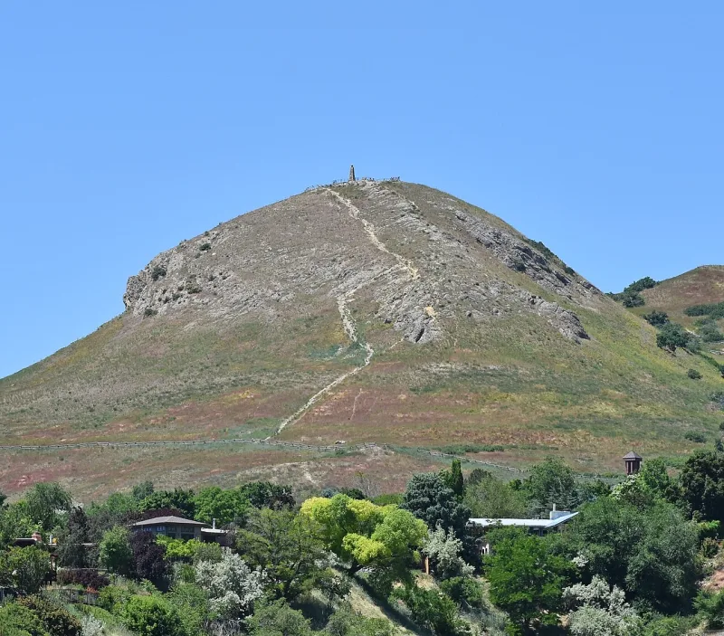

The LDS answer holds up. Do not lead with this one.
In 2021 James Huntsman sued the church for fraud, asking for about $5 million of tithing back. He quoted President Hinckley's assurance in general conference in 2003 about the City Creek mall: "tithing funds have not and will not be used to acquire this property." Against that he set the whistleblower David Nielsen, who said Ensign Peak Advisors moved about $1.4 billion toward City Creek.
A Ninth Circuit panel revived the claim in 2023. Then, on 31 January 2025, the full court ruled for the church, 11 to 0.
Six judges held no reasonable juror could find misrepresentation. Hinckley in the same talk had said the money would come from "commercial entities owned by the Church" and from "earnings of invested reserve funds." The other judges would have barred the suit under church autonomy.
It is the one the court accepted. Hinckley's full 2003 statement distinguished tithing itself from earnings on invested reserves and from commercial-entity money.
City Creek was funded from the latter. So there was no misrepresentation, and Huntsman produced no evidence that tithing principal was spent.
The concurring judges added that the First Amendment bars civil courts from judging what a church tells members about sacred donations at all.
Do not use this one. After full argument the fraud theory lost 11 to 0, and for most of the judges it lost on the merits.
Hinckley's own wording anticipated the distinction. What is left is whether earnings on invested tithing are still tithing, which is a quarrel about words.
Cite this as proof of fraud and you will lose your credibility.
Nothing about this case. If money comes up, go to the SEC settlement, which is admitted fact.

Hinckley's own talk named earnings on reserves, so no juror could find fraud.
The church's defence, accepted by the full court, is that Hinckley's 2003 statement drew a line. It distinguished tithing itself from 'earnings of invested reserve funds' and from commercial-entity money.
City Creek was funded from the latter. So there was no misrepresentation, let alone fraud. Huntsman produced no evidence that tithing principal was spent.
The concurring judges added a second ground. The First Amendment's church-autonomy doctrine forbids civil courts from judging what a church tells members about sacred donations at all.
Do not use this one: it lost 11 to 0, and on the merits.
After full argument on both sides, the fraud theory failed 11-0 on 31 January 2025. For a majority it failed on the merits, not on constitutional avoidance.
Hinckley's own wording at the time anticipated the distinction between earnings and principal.
So what is left is whether earnings on invested tithing are morally still tithing. That is a quarrel about words, not a proven deception. Honest grading calls this answered. The church won this one.
The broader transparency concern is real, but it belongs to the SEC and Ensign Peak case, which stands on its own.